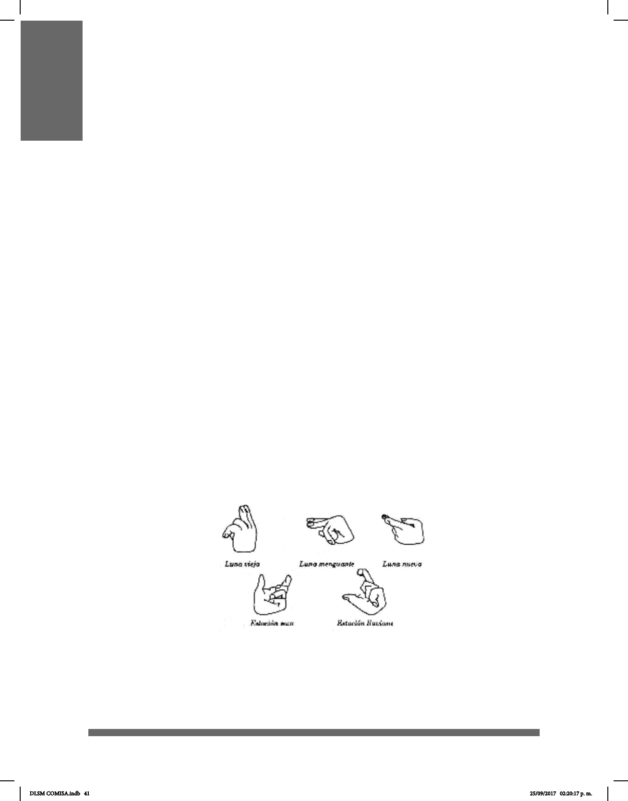

41
HISTORIA DE LA LENGUA DE SEÑAS MEXICANA
En cuanto a la historia de las lenguas de señas en nuestro país se sabe que en
la cultura Mesoamericana se utilizaban las manos para comunicarse. Tatiana
Proskouriako, al estudiar la escritura clásica maya, desarrolla una especie de
tipología de las posturas corporales en los relieves mayas, pero lo hace con el
propósito de descubrir la evolución estilística de las representaciones humanas a
través del tiempo. De cualquier manera, en su estudio se puede notar la especicad
de las poses de las manos, pues los dedos y las muñecas, obedecen a un patrón de
acuerdo con el objeto que portan (Proskouriako, 1950). En los rituales, el
lenguaje gestual y las poses de manos daban fuerza y poder para comunicarse con las
divinidades.
El uso de las manos es de particular importancia, pues permite la comunicación. Los
seres humanos creamos códigos para expresar nuestras ideas, no sólo de manera
oral, sino también gestual y corporal. En esta última, la mano es de vital importancia.
En Mesoamérica estos códigos existieron y ciertas poses que fueron representadas
recurrentemente dan pie para reconocerlo. Además de dichas poses, la mano, por ser
utilizada en gran cantidad de actividades, adquiere el valor de representar a estas
mismas actividades. Así ocurre visiblemente en varios sistemas de escritura
mesoamericana.
La riqueza del uso de las manos y su valor para ejecutar actividades importantes, como
la comunicación o los rituales, las hace convertirse en un valor simbólico. La mano
permite a las personas reconocer su identidad, como una rma, como huella de su
presencia. En Mesoamérica, la mano estaba relacionada simbólicamente con la
vida y con la muerte. La encontramos unida a cultos a Quetzalcóatl, Huitzilopochtli,
Macuilxóchitl y otros dentro de la cosmogonía náhuatl, y a Itzimná en la cultura maya.
Por esos mismos valores simbólicos, la mano tiene valores de ofrenda, joya, amuleto y
símbolo de poder.
Poses de manos para mostrar fases de la luna y estaciones
El origen “de las lenguas de señas en América comienza en Europa a partir de los
métodos de enseñanza para el sordo que incluían el uso de señas, gestos, y la
dactilología” (Cruz, 2008). Por tanto, habría que suponer que la LSM, además de tener
orígenes francés y español (este origen es sólo para la dactilología), es una lengua
autóctona.
DLSM COMISA.indb 41 25/09/2017 02:20:17 p. m.